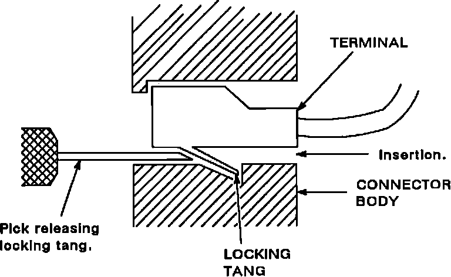
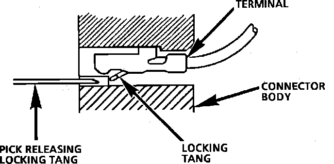
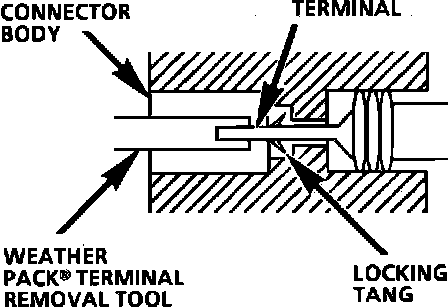

Repairing Connectors
The following general repair procedures can be used to repair most types of connectors. The repair procedures are divided into three general groups: Push-to-Seat and Pull-to-Seat and Weather Pack.^ See CONNECTOR TERMINAL I.D. to determine which type of connector is to be serviced.
^ Use the proper Pick(s) or Tool(s) that apply to the terminal.
Figure 1 - Typical Push-To-Seat Connector:

Fig. 20 Typical Pull-to-Seat Connector and Terminal:

PUSH-TO-SEAT AND PULL-TO-SEAT
Follow the steps below to repair Push-to-Seat or Pull-to-Seat connectors, Figs. 19 and 20. The steps are illustrated with typical connectors. Your connector may differ, but the repair steps are similar. Some connectors do not require all the steps shown. Skip those that don't apply.
1. Remove any CPA (Connector Position Assurance) Locks. CPAs are designed to retain connectors when mated.
2. Remove any TPA (Terminal Position Assurance) Locks. TPAs are designed to keep the terminal from backing out of the connector.
NOTE: The TPA must be removed prior to terminal removal and must be replaced when the terminal is repaired and reseated.
3. Open any secondary locks. A secondary lock aids in terminal retention and is usually molded to the connector.
4. Separate the connector halves and back out seals.
5. Grasp the lead and push the terminal to the forward most position. Hold the lead at this position.
6. Locate the terminal lock tang in the connector canal.
7. Insert the proper size pick straight into the connector canal at the mating end of the connector.
8. Depress the locking tang to unseat the terminal.
Push-to-Seat - Gently pull on the lead to remove the terminal through the back of the connector.
Pull-to-Seat - Gently push on the lead to remove the terminal through the front of the connector.
NOTE: Never use force to remove a terminal from a connector.
9. Inspect terminal and connector for damage. Repair as necessary, see TERMINAL REPAIR.
10. Reform lock tang and reseat terminal in connector body. Apply grease if connector was originally equipped with grease.
11. Install any CPAs or TPAs, close any secondary locks and join connector halves.
Fig. 21 Typical Weather Pack Connector and Terminal:

WEATHER PACK
Follow the steps below to repair Weather Pack(R) connectors, Fig. 21.
1. Separate the connector halves.
2. Open secondary lock. A secondary lock aids in terminal retention and is usually molded to the connector.
3. Grasp the lead and push the terminal to the forward most position. Hold the lead at this position.
4. Insert the Weather Pack(R) terminal removal tool into the front (mating end) of the connector cavity until it rests on the cavity shoulder.
5. Gently pull on the lead to remove the terminal through the back of the connector.
NOTE: Never use force to remove a terminal from a connector.
6. Inspect the terminal and connector for damage. Repair as necessary, see TERMINAL REPAIR.
7. Reform the lock tang and reseat terminal in connector body.
8. Close secondary locks and join connector halves.